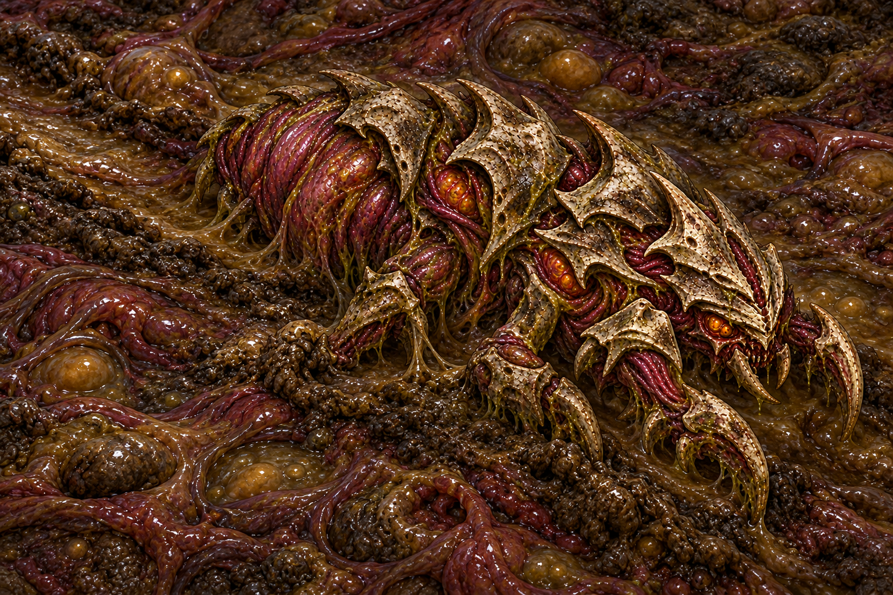
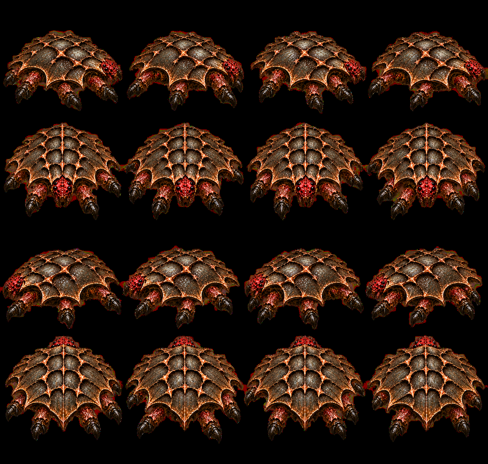
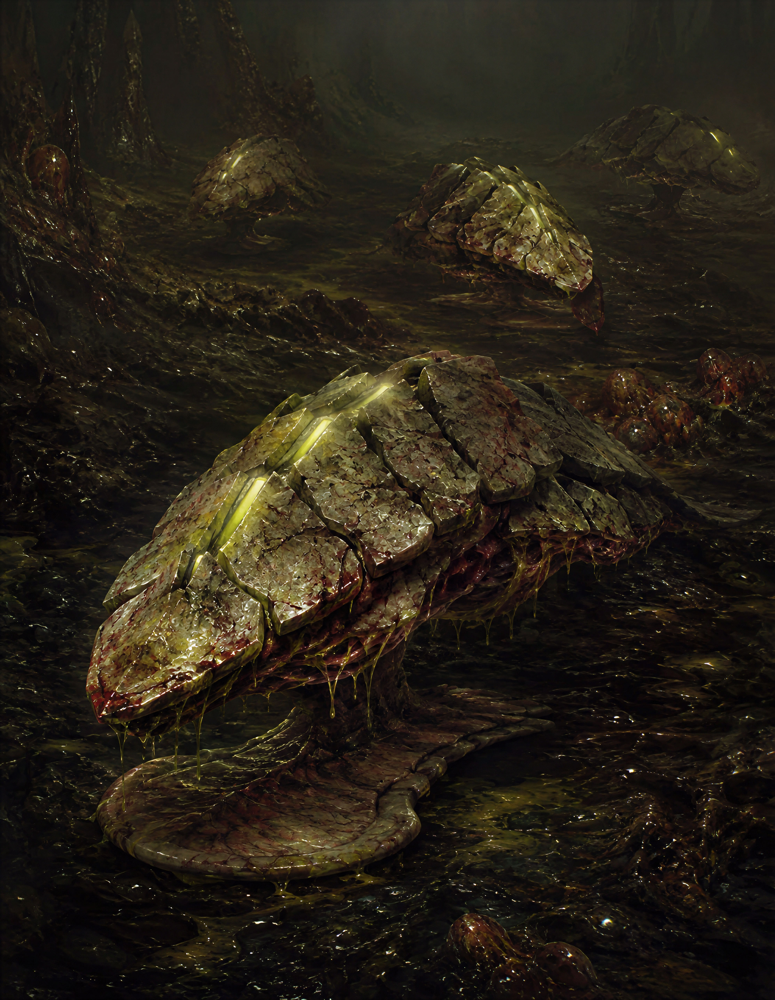

01 · Marrus · отдельные тела в одном организмеБерём: Повторяющиеся телесные модули с общей связью; у каждого свой объём.Отсекаем: Длинную цепь и плавающую посадку. Полип — компактная тяжёлая масса.Открыть источник ↗
02 · Botryllus · границы внутри общей тканиБерём: Соседние особи различимы, хотя соединены общей оболочкой.Отсекаем: Орнаментальную правильность и множество одинаковых мелких ячеек.Открыть источник ↗
03 · Botrylloides · неправильное сращениеБерём: Неровную границу колонии, разную величину и плотность сросшихся участков.Отсекаем: Оранжевую окраску и плоский ковёр: нужны шесть объёмных лопастей.Открыть источник ↗
04 · Blue bell tunicates · лиловая полупрозрачностьБерём: Синюшные стенки, мягкий влажный свет, перекрывающиеся отдельные тела.Отсекаем: Трубки и отверстия, похожие на глаза; насыщенный аквариумный неон.Открыть источник ↗
05 · Brain coral · широкие рельефные перемычкиБерём: Толщину и непрерывность светлого гребня между тёмными впадинами.Отсекаем: Каменный материал и лабиринт мелких борозд: шов должен разделять тела.Открыть источник ↗
06 · Diploria · светлая кромка, тёмный провалБерём: Контраст на границе объёмов; шов читается как поднятая ткань.Отсекаем: Твёрдый панцирь и регулярную мозговую текстуру.Открыть источник ↗
07 · Ascidians · молочная мягкая оболочкаБерём: Мутную полупрозрачность и нежный лиловый оттенок для Полипоида.Отсекаем: Стеклянную чистоту и длинную вертикальную форму.Открыть источник ↗
09 · Actinia fragacea · масса под натяжениемБерём: Влажные крупные блики и ощущение внутреннего давления.Отсекаем: Красную окраску и мелкие точки: при 9×16 px они исчезнут.Открыть источник ↗
10 · Southern anemone · складки и мягкие лопастиБерём: Складчатую поверхность и неравномерно собранную живую ткань.Отсекаем: Множество пузырьков, которые превращают силуэт в виноград.Открыть источник ↗
11 · Ophioderma · диск и независимые лучиБерём: Маленький центральный диск и пять гибких направлений опоры.Отсекаем: Полосатость и членистый скелет: у Полипоида щупальца мягкие.Открыть источник ↗
12 · Ophiothrix · прижатая к грунту посадкаБерём: Низкую посадку диска и разные изгибы лучей на поверхности.Отсекаем: Шипы и тонкую бахрому; по фото нельзя подтвердить темп анимации.Открыть источник ↗
14 · The Thing · скульптура неправильного сращенияБерём: Ощущение нескольких сил внутри одной массы и переходы между чужими объёмами.Отсекаем: ЛЮБУЮ человеческую анатомию, пасти, руки и кровь. Только принцип сращения.Открыть источник ↗
15 · The Thing · натяжение сросшейся тканиБерём: Тяжёлые складки и тканевые мосты между несогласованными формами.Отсекаем: Лицо, зубы и гуманоидный силуэт. Это ограниченный реф материала, не анатомии.Открыть источник ↗
16 · Forager · узнаваемый фрагмент рояБерём: Узнаваемую форму обломка конечности; редкое вкрапление в мягкую массу.Отсекаем: Целиком копировать тело или делать суставчатые ноги основным способом движения.Открыть источник ↗
17 · Carapacid · существующая форма пластинБерём: Контур отдельных обломков пластин из текущего источника игры.Отсекаем: Новый панцирь поверх Полипа; пластины только включения между лопастями.Открыть источник ↗
18 · Mire · палитра окруженияБерём: Окружение, относительно которого проверять лиловую массу и светлые швы.Отсекаем: Считать этот реф кадром проверки: нужна будущая съёмка из настоящей игры.Открыть источник ↗